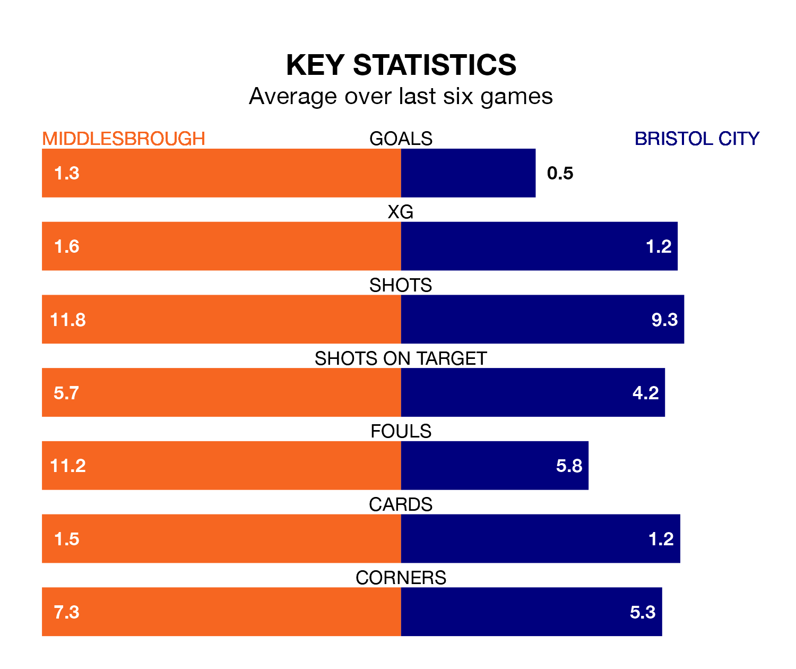

Bristol City travel to the Riverside Stadium looking to secure a first win in seven EFL Championship games against Middlesbrough on Saturday.
The Robins have lost three and drawn three matches since they last earned three points – against Watford on December 26.
They face a Middlesbrough side who have won two and drawn two over that time.
In the last 10 years, Middlesbrough and City have played each other on 15 occasions. Middlesbrough won four of them, City eight, and they drew three times.
On average, the Boro scored 1.2 goals and the Robins 1.5 in those matches.
Their last meeting was on November 25, when City won 3-2 at home.
With 33 goals in 30 games so far this season, City are scoring at below the league average rate with 1.1 goals per game. But they are conceding fewer than average too, letting in 34 goals at a rate of 1.1 per game.
Middlesbrough, meanwhile, are above average scorers, with 1.5 goals per game, compared to a league average of 1.4. They have conceded 1.4 goals per game.
The Robins are 14th in the table after 30 games, of which they have won 10 and drawn eight, earning 38 points.
The Boro are two places ahead of the away team in 12th, with 12 wins and five draws putting them on 41 points.
Middlesbrough's last match was on Sunday, a 1-1 draw against Sunderland, with Marcus Forss getting the goal for the Boro.
City lost 1-0 against Leeds United last time out, on February 2.
Updated: 10:28 (UTC), 06/02/24